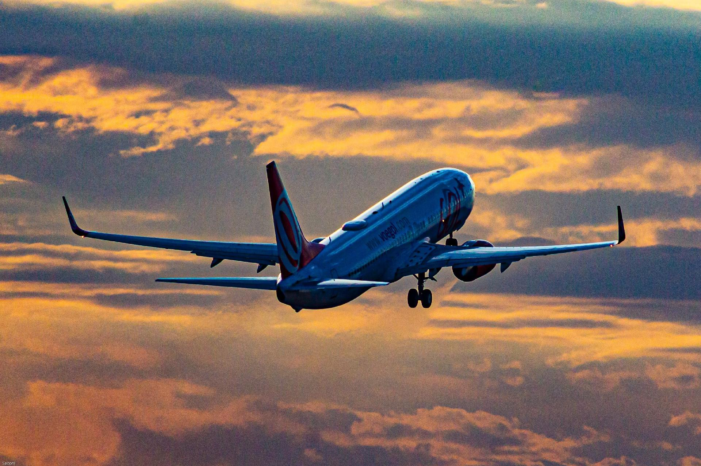

Descubra o Mundo

Planeje suas próximas férias com a gente e explore os destinos mais incríveis do planeta.
A Aventuras Inexploradas é uma empresa de viagens especializada em proporcionar experiências únicas e personalizadas aos seus clientes. Fundada em 2020, a empresa se destaca por oferecer roteiros exclusivos que fogem dos destinos turísticos convencionais. Com uma equipe de guias experientes e apaixonados por exploração, Aventuras Inexploradas cria itinerários sob medida que incluem desde trilhas em florestas remotas até expedições culturais em vilarejos pouco conhecidos. Além disso, a empresa prioriza a sustentabilidade e o turismo responsável, garantindo que cada viagem tenha um impacto positivo nas comunidades locais e no meio ambiente. Com a missão de transformar cada viagem em uma descoberta inesquecível, Aventuras Inexploradas se compromete a proporcionar momentos memoráveis e autênticos a todos os seus aventureiros.
Nossos voos
Voos com segurança
A segurança dos passageiros é a prioridade número um. Desde a fundação da empresa, investimos continuamente em tecnologia de ponta e treinamento rigoroso para garantir que cada voo seja seguro e tranquilo. Nossa frota é composta por aeronaves modernas, equipadas com os mais avançados sistemas de navegação e segurança, e passa por manutenções regulares e rigorosas, seguindo padrões internacionais. Todos os nossos pilotos e tripulantes são altamente qualificados e participam de programas contínuos de treinamento e atualização. Além disso, nossos procedimentos de segurança são constantemente revisados e aprimorados para atender e superar as normas estabelecidas pela Agência Nacional de Aviação Civil (ANAC) e outras entidades reguladoras globais. Antes de cada decolagem, realizamos inspeções detalhadas em todas as aeronaves para verificar a funcionalidade de cada componente crucial. Durante o voo, nossa equipe monitora constantemente as condições do tempo, as rotas de voo e o desempenho da aeronave para garantir uma viagem segura e confortável. Nós também se preocupa com a saúde e o bem-estar dos passageiros. Implementamos rigorosos protocolos de higiene, especialmente em resposta à pandemia de COVID-19, garantindo a desinfecção frequente de superfícies e a disponibilização de máscaras e álcool em gel. Estamos comprometidos em oferecer uma experiência de voo segura, confiável e confortável, proporcionando aos nossos clientes a tranquilidade necessária para desfrutar de suas viagens. Seja para negócios ou lazer, a Viagens/Férias se dedica a levar você ao seu destino com a máxima segurança e eficiência.